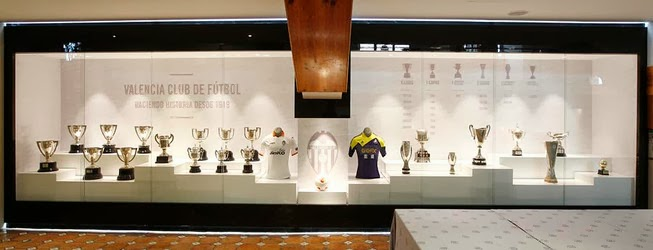

Palmarés

Palmarés del Valencia c.f.
6 veces Campeón de Liga,7 veces Campeón de Copa,1 vez Campeón Supercopa de España, 2 veces Campeón Supercopa de Europa,1 vez Campeón Recopa,1 vez Campeón Copa de la UEFA,2 veces Campeón Copa de Ferias,1 vez Campeon Intertoto UEFA Cup.